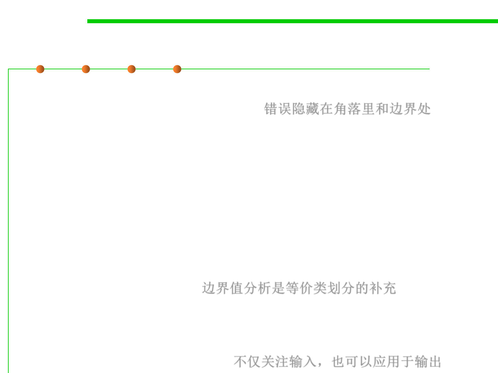

Boundary Value Analysis
7.5 Testing and Test-First Programming
▪ A greater number of errors occurs at the boundaries of the input
domain rather than in the “center”: 错误隐藏在角落里和边界处
– 0 is a boundary between positive numbers and negative numbers
– The maximum and minimum values of numeric types, like int and double
– Emptiness (the empty string, empty list, empty array) for collection types
– The first and last element of a collection
▪ It is for this reason that boundary value analysis (BVA) has been
developed as a testing technique. Boundary value analysis leads to
a selection of test cases that exercise bounding values.
– Boundary value analysis is a test-case design technique that complements
equivalence partitioning. 边界值分析是等价类划分的补充
– Rather than selecting any element of an equivalence class, BVA leads to
the selection of test cases at the “edges” of the class.
– Rather than focusing solely on input conditions, BVA derives test cases
from the output domain as well. 不仅关注输入，也可以应用于输出